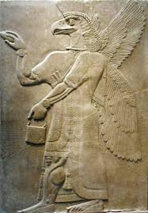
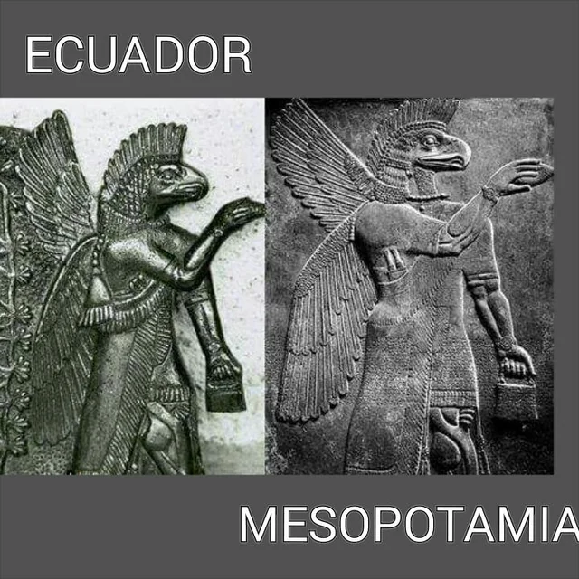
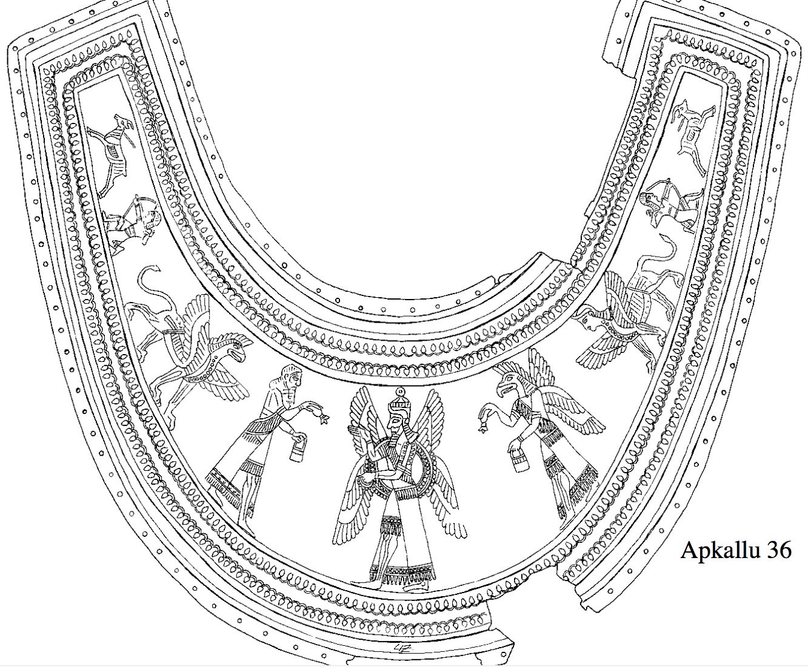

APKALLU EAGLE

Introduction
Alabaster Bas-relief of Eagle-headed winged Apkallu holding a bucket and cone for religious rituals, from the NW Palace of Ashurnasirpal II at Nimrud, Iraq, reign of Ashurnasirpal II, 9th C. BC Pergamon Museum, Berlin, Germany.

The Origin and the Meaning of the Term Apkallu The term “apkallu” is thought to be Akkadian, possibly derived from the earlier Sumerian “abgal.” Sumerian was the language of ancient Sumer, spoken in southern and south-central Mesopotamia from the mid-sixth to early 3rd millennium BC (5500 – 1900 BC).
Dating back to the Neo-Assyrian period (9th–7th centuries BCE), this bas-relief originates from the palaces of Nineveh and Nimrud in present-day Iraq. It depicts the Apkallu — a mythological guardian spirit combining human form with the head of an eagle, symbolizing divine wisdom and protection.
Carved in alabaster with astonishing precision, the Apkallu holds a pine cone and a mysterious “bucket,” believed to represent purification rituals or the fertilizing essence of life. These reliefs adorned royal walls, serving as both spiritual guardians and expressions of the king’s divine authority. Archaeologists like Austen Henry Layard first uncovered them in the mid-19th century, revealing the grandeur and mystery of Assyrian artistry.
History
In the book "Protective Spirits in Mesopotamia: Ritual Texts (Cuneiform Studies)," pages 74-76, the bird-shaped "Apkalu" statues are described as "Assyrian protective statues," while the fish-shaped "Apkalu" statues are of original Babylonian origin. The issue appears to be one of origin. The book includes tables that allow for comparison of examples of each type.
In Neo-Assyrian art these bird-headed “genies,” as they were long described, are now known to be apkallū, “bird-apkallū,” in this case, mixed-feature exorcists and creatures of protection created by the god Ea. They traditionally served as advisors to kings. Their association with sacred trees, as they are often portrayed, remains somewhat perplexing. This apkallū makes the iconic gesture of exorcism and liberation of sin with the mullilu cone in his raised right hand, and the banduddu water bucket in his left hand. There are three known types of apkallū: the human, with wings; the avian-headed, with wings, and the fish-apkallū, with carp skin draped over their heads.
It is thought that the term was used to denote some form of wisdom and can be translated into English as “the wise”, “sage” or “expert.” It was used as an epithet for the gods’ Ea and Marduk but applied to other deities as well. Alternatively, the term was used to refer to priests, especially diviners.
The Apkallu, often conflated with the Anunnaki, were ancient Mesopotamian demi-gods of wisdom, depicted as hybrid figures—part man, part fish or bird—tasked with civilizing humanity. In Babylonian and Assyrian traditions, these sages emerged from the primordial waters of the Abzu, bringing sacred knowledge, agriculture, and architecture to early humans. The later flood myths, including the Epic of Gilgamesh, portray the Apkallu as guardians of pre-diluvian wisdom, with one, Utnapishtim, preserving forbidden knowledge after the deluge. Unlike the Anunnaki, who were divine overseers, the Apkallu functioned as intermediaries, embodying the esoteric transmission of cosmic law. Their eventual demonization in later texts suggests an ideological shift, where ancient knowledge once revered was later deemed dangerous, echoing similar motifs found in Promethean and Enochian mythologies.
Theories
The "Priestly Guardians" theory posits that the eagle-headed apkallū originally represented an elite class of priests tasked with guarding temples and palaces. Proponents of this theory base their arguments on the consistent appearance of these figures at doors and entrances in ancient reliefs, as well as their carrying of ritual tools like the basket and cone. From this perspective, the wings and avian head do not represent a biological description of a hybrid being, but are rather symbols of supreme vigilance and guardianship. Consequently, the artistic imagery magnified the practical function (guarding) into the form of a majestic predatory bird, reflecting power and awe.
The avian form of the Apkallu is interpreted as representing a ritual mask or shroud, similar to the use of animal masks in global traditions to facilitate symbolic transformation during ceremonies. Proponents of this view argue that the coexistence of various Apkallu forms (human, fish, and avian) within a single system suggests that this diversity should be understood as symbolic costumes for different and specific roles. Consequently, the "eagle head" does not describe a literal biological nature or a hybrid being, but rather signifies a temporary ritual identity assumed by the practitioner during the performance of sacred duties.
The Apkalu, with their eagle heads, are seen as semi-divine sages sent by the god Enki (Ea) to impart wisdom to humankind, emphasizing their role in purification and fertility through the symbolism of carrying a bucket and cone. In alternate histories, they are compared to similar beings in other cultures, such as the Egyptian god Thoth (ibis-headed, a symbol of writing and wisdom) or Horus (falcon-headed, a symbol of the sky and royalty), as evidence of a shared, cross-cultural wisdom rooted in common mythological origins before the Flood.
In Graham Hancock's book "Magicians of the Gods," the eagle-headed Apkalu are seen as remnants of a lost civilization that collapsed at the end of the Ice Age (around 12,000 years ago) due to a natural disaster. They represent "wise men" who passed on essential knowledge (agriculture, engineering, rituals) to rebuild society, with links to archaeological sites like Göbekli Tepe as evidence of earlier civilizations.
This hybrid sage , also called griffin-demon, Nisroch, or simply genie, is a human body with the head of a bird of prey (perhaps an eagle or a vulture)
Compare
America

The two figures (the winged creature with the head of an eagle and the protective sage) are said to be evidence of ancient sea voyages or trade between South American civilizations (such as ancient Ecuadorian civilizations such as Valdivia or La Tolita) and Mesopotamia (Sumer/Assyria). This is promoted as "proof" that civilizations were not isolated, but connected across oceans thousands of years before Columbus.
Research

This image is a line drawing of an ancient Assyrian relief from the palace of King Ashurnasirpal II at Nimrud (ancient Kalhu, Iraq), dating to about 883-859 BC, and is known in academic studies as Apkallu 36 (number 36 in the classification of scholar Stephanie Dalley in her study of the iconography of gods and demons in the ancient Near East).
The Bīt Mēseri text (a ritual incantation from the 1st century BCE, though with older versions) is a primary source that lists the names of the seven pre-flood sages, such as Uanna, Uannedugga, and Enmedugga. It describes these sages as pure beings originating from the Apsu (the fresh underground waters), sent by the deity Enki/Ea for protection and purification. Furthermore, the text links these sages to apotropaic (evil-averting) rituals and explains the symbolic use of the bucket (banduddu) and the cone (mullilu) as essential tools for purification and fertility rites.
According to scholars such as Frans Wiggermann (in his book Mesopotamian Protective Spirits, 1992) and Anthony Green (in articles on Assyrian iconography), this type is sometimes called a "bird-apkallu" or "griffin demon," and is an Assyrian evolution, distinct from the fish-cloaked type that dates back to earlier Babylonian traditions.